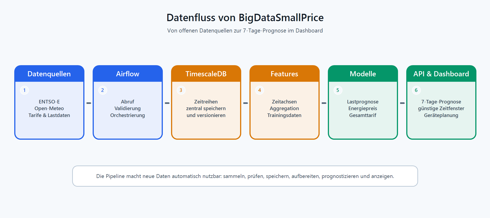

Strom sparen mit Daten: Wann ist Strom in Winterthur günstig?
Strom ist nicht immer gleich teuer. Wer den richtigen Zeitpunkt kennt, kann flexible Geräte günstiger betreiben.
Mit dynamischen Tarifen kann der Preis je nach Tageszeit, Netzbelastung und Marktsituation deutlich schwanken. Für Haushalte wird damit eine einfache Frage spannend: Soll die Waschmaschine jetzt laufen, oder lohnt sich Warten?
In unserem Projekt BigDataSmallPrice haben wir eine Plattform gebaut, die genau diese Frage für Winterthur beantwortet. Sie kombiniert öffentliche Energie-, Wetter-, Tarif- und Lastdaten, prognostiziert daraus dynamische Stromtarife und zeigt günstige Zeitfenster in einem Dashboard.
Warum eine Prognose nötig ist
Dynamische Stromtarife bestehen vereinfacht aus zwei Teilen: dem Energiepreis am Strommarkt und einem lokalen Netzpreis. Der Energiepreis wird stark vom europäischen Day-Ahead-Markt beeinflusst. Der Netzpreis hängt stärker davon ab, wie stark das lokale Stromnetz belastet ist.
Für Nutzerinnen und Nutzer zählt aber nicht die einzelne Komponente, sondern der Gesamttarif. Ein günstiger Marktpreis hilft wenig, wenn gleichzeitig das Netz stark ausgelastet ist. Darum reicht es nicht, historische Preise anzuzeigen. Nützlich wird ein Tarif erst, wenn er als Prognose vorliegt.
Aus vielen Zeitreihen wird eine praktische Empfehlung: jetzt verbrauchen oder später.
Von Rohdaten zur Strompreisprognose
BigDataSmallPrice verarbeitet acht Datenquellen. Dazu gehören Day-Ahead-Preise und Lastdaten der ENTSO-E Transparency Platform, Wetterdaten von Open-Meteo, hydrologische Daten des BAFU, Tarifinformationen von EKZ, CKW und Groupe E sowie offene Last- und PV-Daten von Stadtwerk Winterthur.
Die Daten kommen in unterschiedlichen Formaten, Zeitzonen und Auflösungen. Einige Werte sind stündlich, andere viertelstündlich oder täglich verfügbar. Deshalb war ein grosser Teil des Projekts klassische Datenarbeit: Daten abrufen, prüfen, vereinheitlichen, speichern und für Machine Learning nutzbar machen.

Die Pipeline läuft mit Apache Airflow. Rohdaten werden in TimescaleDB gespeichert, einer PostgreSQL-Erweiterung für Zeitreihendaten. Insgesamt umfasst unsere Datenbank rund 1,5 Millionen Zeitreihenpunkte. Allein der Winterthurer Bruttolastgang enthält rund 462’000 Viertelstundenwerte aus 13 Jahren.
Zwei Modelle statt einer Blackbox
Wir haben den Tarif nicht mit einem einzigen Modell vorhergesagt, sondern in zwei Teilprobleme aufgeteilt.
Modell A prognostiziert die lokale Nettolast in Winterthur. Dafür nutzt es Kalendermerkmale, Wetterprognosen, Feiertage sowie Lastwerte von gestern und von der Vorwoche. Aus dieser prognostizierten Netzlast wird der dynamische Netzpreis berechnet.
Modell B prognostiziert den EPEX-Day-Ahead-Preis für die Schweiz. Hier fliessen vergangene Strompreise, Wetterdaten, Lastprognosen, Produktionsdaten und internationale Einflussgrössen ein. Besonders relevant ist dabei auch das Ausland: Windproduktion in Norddeutschland kann den zentraleuropäischen Strommarkt beeinflussen und damit indirekt auch Schweizer Preise bewegen.
Für beide Aufgaben testeten wir mehrere Ansätze, darunter naive Baselines, lineare Modelle, LSTM, Transformer-Varianten und XGBoost. Am Ende überzeugte XGBoost am meisten. Es trainiert schnell, funktioniert gut mit tabellarischen Zeitreihendaten und lieferte in unserem Setup die robustesten Resultate.
Was kam heraus?
Die Resultate zeigen, dass sich dynamische Stromtarife mit öffentlich verfügbaren Daten gut prognostizieren lassen. Im Test erreichte das Lastmodell einen mittleren prozentualen Fehler von 3,99 Prozent. Das Energiepreismodell lag bei 7,72 Prozent.
Damit lagen beide Modelle deutlich unter unseren ursprünglichen Qualitätszielen: 8 Prozent Fehler für die Lastprognose und 15 Prozent für die Energiepreisprognose. Der API-Endpunkt liefert daraus eine 7-Tage-Prognose im 15-Minuten-Raster, also 672 Prognosepunkte pro Abruf.
.png)
Das Dashboard übersetzt diese Daten in eine einfache Ampellogik. Es markiert günstige, mittlere und teure Zeitfenster und macht sichtbar, wann sich flexible Verbraucher wie E-Autos, Waschmaschinen oder Wärmepumpen besonders lohnen.
Was wir gelernt haben
Die wichtigste Erkenntnis: Gute Prognosen beginnen nicht beim Modell, sondern bei der Datenpipeline. Ein präzises Modell hilft wenig, wenn Eingangsdaten fehlen, falsch ausgerichtet sind oder unbemerkt in unterschiedlichen Zeitzonen vorliegen.
Auch die Modellwahl war lehrreich. Komplexere Modelle sind nicht automatisch besser. LSTM und Transformer waren zwar spannend, benötigten aber mehr Trainingszeit und erreichten nicht die Genauigkeit von XGBoost. Für unsere strukturierten Energiedaten war Gradient Boosting die pragmatischere Wahl.
Schwierig war vor allem die Orchestrierung mit Airflow. Backfills, tägliche Updates, Feature-Generierung und Training mussten sauber zusammenspielen. Zusätzlich erschwerten API-Limits, fehlende Werte und verspätete Veröffentlichungen die Arbeit.
Fazit
BigDataSmallPrice zeigt, wie aus offenen Daten, sauberer Architektur und Machine Learning eine konkrete Alltagshilfe entstehen kann. Für einzelne Haushalte geht es vielleicht nur um wenige Rappen pro Kilowattstunde. Über viele Geräte, Haushalte und Tage hinweg entsteht daraus aber ein relevantes Potenzial.
Dynamische Stromtarife machen Energie komplexer. Unsere Plattform macht sie verständlicher.
Links
- Projekt-Repository: BigDataSmallPrice
- Datenquellen: ENTSO-E Transparency Platform, Open-Meteo, BAFU
- Modellierung: XGBoost